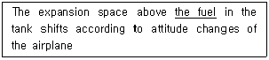
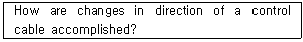

항공기관정비기능사 (2007-01-28 기출문제)
1과목: 비행원리
1. 유체의 흐름이 층류에서 난류로 변화하는데 관계되는 요소로 가장 거리가 먼 것은?
- 유체의 속도
- 유체의 양
- 유체의 점성
- 물체의 형상
(정답률: 64%)

2. 다음 중 항력에 대한 설명으로 가장 관계가 먼 내용은?
- 형상항력은 물체의 모양에 따라 달라진다.
- 유해항력이 클수록 비행성능이 좋아진다.
- 압력항력과 점성항력을 합쳐서 형상항력 이라 한다.
- 양력에 관계하지 않고 비행을 방해하는 모든 항력을 통틀어 유해향력이라 한다.
(정답률: 74%)
3. 다음 중 비행기 실속의 종류가 아닌 것은?
- 부분실속
- 정상실속
- 완전실속
- 연속실속
(정답률: 52%)
4. 다음 중 비행기의 세로안정을 좋게 하기 위한 방법으로 가장 관계가 먼 내용은?
- 꼬리날개 효율이 커지도록 한다.
- 날개가 무게중심보다 높은 위치에 있도록 한다.
- 무게중심이 날개의 공기역학적 중심보다 뒤에 위치하도록 한다.
- 무게중심과 공기역학적 중심과의 수직거리 값이(+)의 값이 되도록 한다.
(정답률: 67%)
5. 헬리콥터에서 균형(trim)의 의미를 가장 올바르게 설명한 것은?
- 직교하는 2개의 축에 대하여 힘의 합이 “0”이 되는 것
- 직교하는 2개의 축에 대하여 힘과 모멘트 의 합이 각각 “1”이 되는 것
- 직교하는 3개의 축에 대하여 힘과 모멘트 의 합이 각각 “0”이 되는 것
- 직교하는 3개의 축에 대하여 모든 방향의 힘의 합이 “1”이 되는 것
(정답률: 76%)
6. 정압과 동압에 대한 설명 중 가장 관계가 먼 내용은?
- 이상 유체의 정상 흐름에서 정압과 동압의 합은 전압이며 일정하다.
- 동압은 유체의 운동에너지가 압력으로 변환된 것이다.
- 동압의 크기는 속도에 반비례한다.
- 동압과 정압의 단위는 같다.
(정답률: 63%)
7. 프로펠러에서 유효피치를 가장 올바르게 설명한 것은?
- 비행기가 최저속도에서 프로펠러가 1초간 전진한 거리
- 비행기가 최고속도에서 프로펠러가 1초간 전진한 거리
- 공기 중에서 프로펠러가 1회전할 때 실제로 전진한 거리
- 공기를 강체로 가정하고 프로펠러를 1회전할 때 이론적으로 전진한 거리
(정답률: 86%)
8. 대기 중의 건조공기 성분에서 질소, 산소, 아르곤, 이산화탄소 이외의 기체를 모두 합쳐서 전체에서 차지하는 부피비로 산정한다면 그 값으로 올바른 것은?
- 0.01% 이하
- 1~2% 정도
- 4~5% 정도
- 7~8% 정도
(정답률: 63%)
9. 다음 중 조종간과 승강키가 연결장치에 의해 연결 되었을 때 조종력(Fe)을 산출하기 위한 식은? (단, K:조종계통의 기계적 장치에 의한 이득, He:승강키 힌지 모멘트)(문제 오류로 복원중입니다. 보기내용을 정확히 아시는 분께서는 오류신고를 통하여 내용작성을 부탁드립니다. 정답은 4번입니다.)
- 복원중
- 복원중
- 복원중
- 복원중
(정답률: 78%)
10. 비행기가 정적중립인 상태일 때 가장 올바르게 설명한 것은?
- 받음각이 변화된 후 원래의 평형상태로 돌아간다.
- 조종에 대해 과도하게 민감하며, 교란을 받게되면 평형상태로 되돌아 오지 않는다.
- 비행기의 자세와 속도를 변화시켜 평형을 유지시킨다.
- 반대 방향으로의 조종력이 작용되면 원래의 평형상태로 되돌아 간다.
(정답률: 57%)
11. 다음 중 양력(L)을 가장 올바르게 표현한 것은? (단, 양력계수 : , 공기밀도:p 날개의면적:S, 비행기의 속도:V )(문제 오류로 복원중입니다. 보기내용을 정확히 아시는 분께서는 오류신고를 통하여 내용작성을 부탁드립니다. 정답은 3번입니다.)
- 복원중
- 복원중
- 복원중
- 복원중
(정답률: 82%)
12. 해면에서의 대기온도가 15℃일 때 그 지역의 해면고도 2000m 에서의 대기온도는 약 몇℃ 인가?
- 2
- 4
- 13
- 15
(정답률: 77%)
13. 다음 중 이륙활주거리를 짧게 하기 위한 조건으로 가장 관계가 먼 내용은?
- 기관의 추력이 크면 이륙성능이 좋아진다.
- 비행기의 무게가 가벼우면 이륙거리는 짧다.
- 맞바람을 받으면서 이륙하면 이륙성능이 좋다.
- 고항력장치를 사용하면 이륙거리를 단축시킬 수 있다.
(정답률: 70%)
14. 비행기의 중량이 2500kg, 날개의 면적이 80m2 지상에서의 실속속도가 180km/h이다. 이 비행기의 최대 양력계수는 얼마인가? (단, 공기밀도는 1/8kg∙ s2/m4이다.)
- 0.2
- 0.4
- 0.6
- 0.8
(정답률: 34%)
15. 헬리콥터 회전날개의 원판하중을 가장 올바르게 설명한 것은?
- 회전날개 깃 전체의 무게를 회전날개에 의해 만들어지는 회전면의 면적으로 나눈 값이다.
- 헬리콥터 전체의 무게를 회전날개에 의해 만들어지는 회전면의 면적으로 나눈 값이다.
- 회전날개에 의해 만들어지는 회전면의 면적을 헬리콥터 전체의 무게로 나눈 값이다.
- 헬리콥터 전체의 무게를 회전날개에 깃의 수로 나눈 값이다.
(정답률: 41%)
16. 항공기 기체에 대한 오버홀 이라고 볼 수 있는 점검은?
- A 점검
- B 점검
- C 점검
- D 점검
(정답률: 78%)
17. 해머와 같은 목적으로 사용되며, 타격부위에 변형을 주지 않아야 할 가벼운 작업에 사용되는 공구는 어느 것인가?
- 탭
- 맬릿
- 텅
- 스패너
(정답률: 83%)
18. 다음 중 두께게이지와 용도가 비슷한 게이지는?
- R 게이지
- 피치게이지
- 필러게이지
- 나이프게이지
(정답률: 78%)
19. 토크렌치 암의 길이가 5인치 인 토크렌치에 0.5인치의 토크 어탭터를 연결하여 토크의 값이 25IN-LBS되게 볼트를 토크 하였다. 볼트에 실제로 가해지는 토크의 값은 몇 IN-LBS인가?
- 25.5
- 26.5
- 27.5
- 28.5
(정답률: 49%)
20. AL 합금 리벳 중 노랑색은 무엇을 뜻하는가?
- 크롬산 아연으로 보호도장을 한 것이다.
- 양극처리를 한 것이다.
- 금속도료를 도장한 것이다.
- 리벳 취급시의 안전사항을 표시한 것이다
(정답률: 56%)
2과목: 항공기정비
21. 블라스트 세척 작업에 대한 설명 중 가장 올바른 것은?
- 정확한 치수가 필요한 부품에는 적용해서는 안 된다.
- 작업방법은 증기,건식,습식 3가지가 주로 이용된다.
- 습식 블라스트 세척에서 슬러리 탱크는 사용되지 않는다.
- 건식 블라스트 세척에 사용되는 연마제로는 물에 잘 희석되는 화공약품을 사용한다.
(정답률: 37%)
22. 염색침투검사로는 재료의 무엇을 점검하는가?
- 자화
- 비자화
- 표면균열
- 내부균열
(정답률: 80%)
23. 항공용 산소를 취급할 때 고압 산소통의 경우에는 표면에 어떤 색이 칠해져 있는가?
- 노랑색
- 연한 녹색
- 빨강색
- 연한 청색
(정답률: 67%)
24. 헬리콥터의 지상취급에 속하지 않는 것은?
- 도색작업
- 견인작업
- 계류작업
- 잭작업
(정답률: 83%)
25. 밑줄 친 부분의 영문 내용으로 가장 올바른 것은?

- 연료
- 윤활유
- 유압유
- 공기압
(정답률: 90%)
26. 다음 영문이 요구하는 장치는?

- 풀리
- 벨 크랭크
- 페어리드
- 턴버클
(정답률: 67%)
27. 와전류검사의 특성에 대한 설명 중 가장 관계가 먼 내용은?
- 검사의 자동화가 가능하다.
- 비전도성 물체에는 적용할 수 없다.
- 표면결함에 대한 검출감도가 좋다.
- 표면 아래의 깊은 위치에 있는 결함의 검출을 쉽게 할 수 있다.
(정답률: 54%)
28. 불안전한 행위로 발생되는 사고와 가장 거리가 먼 것은?
- 물리적 위험 상태
- 피로한 상태
- 작업자의 능력부족
- 불안전한 습관
(정답률: 50%)
29. A급 화재에 속하지 않는 것은?
- 유류화재
- 종이화재
- 가구화재
- 직물화재
(정답률: 88%)
30. 항공기 및 관련 장비와 부품에 적용되는 정비 방식으로 가장 관계가 먼 것은?
- 시한성 정비
- 상태정비
- 감항성 정비
- 신뢰성 정비
(정답률: 50%)
31. 다음의 정비기술도서 중에서 비행교범과 가장관계 깊은 것은?
- 정비기술정보
- 부품기술정보
- 작동기술정보
- 수리기술정보
(정답률: 62%)
32. 안전결선 작업방법에 대한 설명 중 가장 관계가 먼 내용은?
- 3개 이상의 부품이 기하학적으로 밀착되어 있을 때에는 단선식 결선법을 사용하는 것이 좋다.
- 안전결선의 끝 부분은 1~2회 정도 꼬아 끝을 대각선 방향으로 전달한다.
- 안전결선을 신속하게 하기 위해서는 안전 결선용 플라이어 또는 와이어 트위스터를 사용한다.
- 안전결선에 사용된 와이어는 다시 사용해 서는 안된다.
(정답률: 79%)
33. 기체 판금 작업시 리벳의 배치에 대한 설명 중 가장 관계가 먼 내용은?
- 리벳의 횡단 피치은 열과 열사이의 거리이다.
- 리벳의 피치란 같은 리벳 열에서 인접한 리벳 중심간의 거리이다.
- 리벳의 끝거리는 판재의 모서리에서 가장 먼 곳에 배열된 리벳 중심까지의 거리임
- 리벳의 열이란 판재의 인장력을 받는 방 향에 대하여 직각방향으로 배열된 리벳 집합이다.
(정답률: 53%)
34. 정밀 측정기기의 경우 규정된 기간 내에 정기적으로 공인기관에서 검∙교정을 받아야 한다. 검∙교정을 영문으로 옮기면?
- Maintenance
- Check
- Calibration
- Repair
(정답률: 51%)
35. 육각머리 볼트 중에서 섕크에 구멍이나 있는 볼트나 아이볼트, 스터드 볼트 등과 함께 사용 는 큰 인장하중에 잘 견디며 코터 핀 작업 시 사용되는 너트는?
- 체크너트
- 캐슬전단너트
- 캐슬너트
- 나비너트
(정답률: 71%)
36. 왕복기관의 실린더에서 발생되는 마력으로 가장 올바른 것은?
- 축 마력
- 지시 마력
- 제동 마력
- 추력 마력
(정답률: 50%)
37. 왕복기관에서 직접 연료분사장치의 구성요소가 아닌 것은?
- 분사노즐
- 프라이머
- 주 조정장치
- 연료분사펌프
(정답률: 59%)
38. 항공기용 왕복기관의 점화시기에 대한 설명으로 가장 올바른 것은?
- 전기적 에너지에 의하여 점화되는 기관의 점화는 압축상사점 후에 이루어져야 한다.
- 실린더 안의 최고압력은 상사점전 10도 근처에서 나타나도록 점화시기를 정한다.
- 외부 저모하시기조정은 기관의 점화진각 에서 크랭크축과 캠축의 각도를 일치시키는 것이다.
- 내부 점화시기 조정은 마그네토의 E갭 위치와 브레이커 포인트가 떨어지는 순간을 맞추는 것이다.
(정답률: 45%)
39. 피스톤 링과 홈과 홈 사이를 무엇이라 하는가?
- 링
- 랜드
- 그루브
- 서페이스
(정답률: 46%)
40. 가변피치 프로펠러 중 저피치와 고피치 사이에서 무한한 피치각을 취하는 프로펠러는 어느 것인가?
- 2단 가변피치 프로펠러
- 완전 페더링 프로펠러
- 정속 프로펠러
- 역피치 프로펠러
(정답률: 38%)
3과목: 항공기관
41. 왕복기관의 윤활계통에서 릴리프밸브의 역할로 가장 올바른 것은?
- 윤활유가 불필요하게 기관 내부로 스며들어가는 것을 방지한다.
- 기관의 내부로 들어가는 윤활유의 압력이 높을 때 윤활유를 펌프입구로 되돌려 준다.
- 윤활유 여과기가 막혔을 때 윤활유가 여과기를 거치지 않고 직접 기관의 내부로 공급되게 한다.
- 윤활유 온도가 높을 때는 윤활유를 냉각기로 보내고 낮을 때는 직접 윤활유 탱크로 가도록 한다.
(정답률: 68%)
42. 가스터빈기관의 연료-오일 냉각기에서 일어나는 현상으로 가장 올바른 것은?
- 연료는 가열되고 오일은 냉각된다.
- 연료는 냉각되고 오일은 가열된다.
- 연료와 오일이 모두 가열된다.
- 연료와 오일이 모두 냉각된다.
(정답률: 57%)
43. 가스터빈기관의 물 분사장치에서 알코올의 주 기능은 무엇인가?
- 공기의 밀도를 증가시키기 위하여
- 연소가스의 온도를 감소시키기 위하여
- 공기의 부피를 증가시키기 위하여
- 물이 어는 것을 방지하기 위하여
(정답률: 71%)
44. 가스터빈기관에서 윤활유의 구비조건으로 틀린 것은?
- 인화점이 높을 것
- 기화성이 낮을 것
- 점도지수가 낮을 것
- 산화안전성이 높을 것
(정답률: 55%)
45. 다음 중 가스터빈기관의 연료노즐로 가장 올바른 것은?
- 분사식과 분무식
- 분무식과 증발식
- 분사식과 연소식
- 연소식과 증발식
(정답률: 47%)
46. C.F.R(Cooperative Fuel Research)기관으로 측정하는 것은 무엇인가?
- 윤활유의 유동성을 측정
- 윤활유의 내한성을 측정
- 가솔린의 증기압력을 측정
- 가솔린의 안티노크성을 측정
(정답률: 53%)
47. 왕복기관에서 하이드로릭 록(hydraulic lock)은 어떤 곳에서 가장 많이 걸리는가?
- 대향형 엔진의 우측 실린더
- 대향형 엔지의 좌측 실린더
- 성형엔진의 상부 실린더
- 성형엔진의 하부 실린더
(정답률: 52%)
48. 가스터빈기관에서 블리이드 밸브의 주된 역할은 무엇인가?
- 분사연료의 윱입을 조절한다.
- 윤활계통의 압력을 조절한다.
- 압축기의 실속을 방지한다.
- 램 압력을 조절한다.
(정답률: 41%)
49. 기관 압력비를 가장 올바르게 나타낸 것은?
- 연소실 입구와 터빈 출구의 전압의 비
- 압축기 입구의 전압과 출구의 전압의 비
- 압축기 입구의 전압과 터빈 출구의 전압의 비
- 압축기 입구의 전압과 연소실 출구의 전압의 비
(정답률: 54%)
50. 가스터빈기관의 추력에 영향을 미치는 요인 중 대기온도와 대기 압력에 대한 설명으로 가장 올바른 것은?(오류 신고가 접수된 문제입니다. 반드시 정답과 해설을 확인하시기 바랍니다.)
- 대기온도가 증가하면 추력은 증가하고, 대기압이 증가하면 추력은 감소한다.
- 대기온도가 증가하면 추력은 감소하고, 대기압이 증가하면 밀도가 증가되어 추력이 증가한다.
- 대기온도가 증가하면 추력은 증가하고, 대기압이 증가하면 추력은 증가한다.
- 대기온도가 증가하면 추력은 감소하고, 대기압이 증가하면 밀도는 감소하여 추력이 감소한다.
(정답률: 27%)
51. 기관 시동 시 과열시동에 대한 설명으로 가장 올바른 것은?
- 시동 중 윤활류 압력이 규정된 한계 값을 초과하는 현상
- 시동 중 EGT가 규정된 한계 값을 초과하는 현상
- 시동 중 RPM이 규정된 한계 값을 초과하는 현상
- 엔진 압력비가 규정된 한계 값을 초과하는 현상
(정답률: 55%)
52. 왕복기관에서 크랭크축의 변형이나 비틀림 진동을 줄여 주기 위해서 설치되는 것은?
- 크랭크 암
- 주 저널
- 평형추
- 다이나믹 댐퍼
(정답률: 72%)
53. 제동 열효율을 가장 옳게 표현한 것은? (문제 오류로 복원중입니다. 보기내용을 정확히 아시는 분께서는 오류신고를 통하여 내용작성을 부탁드립니다. 정답은 2번입니다.)
- 복원중
- 복원중
- 복원중
- 복원중
(정답률: 78%)
54. 헬리콥터에서 주로 사용되는 기관은?
- 터보 샤프트 기관
- 터보 프롭 기관
- 터보 제트 기관
- 터보 팬 기관
(정답률: 62%)
55. 열역학에서 사용되는 용어에 대한 다음 설명 중 틀린 것은?
- 비열을 1기압 상태에서 1g의 물을 273℃ 높이는데 필요한 열량이다.
- 압력은 단위 면적에 작용하는 힘의 수직 분력이다.
- 물질의 비체적은 단위 질량당 체적이다
- 밀도는 단위 체적당의 질량이다.
(정답률: 47%)
56. 터빈 깃 안쪽에 공기통로를 만들고, 터빈 깃의 표면에 냉각면을 형성하게 하는 냉각방법은?
- 증발 냉각
- 공기막 냉각
- 충돌 냉각
- 대류 냉각
(정답률: 50%)
57. 속도 720 ㎞/h로 비행하는 항공기에 장착된 터보제트 기관이 196㎏/s인 중량 유량의 공기를 흡입하여 300m/s의 속도로 배기 시킨다. 이때 진추력(㎏)은 얼마인가?
- 2000
- 3000
- 5000
- 6000
(정답률: 31%)
58. 실린더 안지름이 15.0cm, 행정거리가 0.155m, 실린더 수가 4개인 기관의 총 행정 체적(cm3)은?
- 730
- 2737
- 10951
- 16426
(정답률: 66%)
59. 구조가 간단하고 길이가 짧으며 연소 효율이 좋으나, 정비하는 데 불편한 결점이 있는 가스 터빈기관의 연소실은?
- 캔 형
- 역류형
- 애뉼러 형
- 캔-애뉼러 형
(정답률: 60%)
60. 브레이턴 사이클은 어떤 과정으로 구성되어 있는가?
- 2개의 등온과정과 2개의 정적과정
- 2개의 등온과정과 2개의 정압과정
- 2개의 단열과정과 2개의 정적과정
- 2개의 단열과정과 2개의 정압과정
(정답률: 49%)